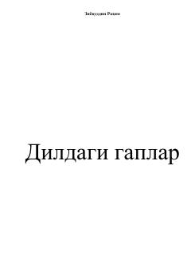

DGIymon, odob va hayotiy ibratli mulohazalar jamlangan ma'naviy-ma'rifiy kitob.
Mazkur kitobda insonning e'tiqodi, ruhiy poklanishi, oila, farzand tarbiyasi, shuningdek, ota-onasiga yaxshilik qilish, mehribonlik, insof va adolat kabi yuksak insoniy fazilatlar haqida ibratli mulohazalar jamlangan. Asar muallifning hayotiy kuzatishlari va ijtimoiy tarmoqlarda e'lon qilingan qisqa bitiklari asosida tayyorlangan bo'lib, o'quvchini tafakkur qilishga undaydi.